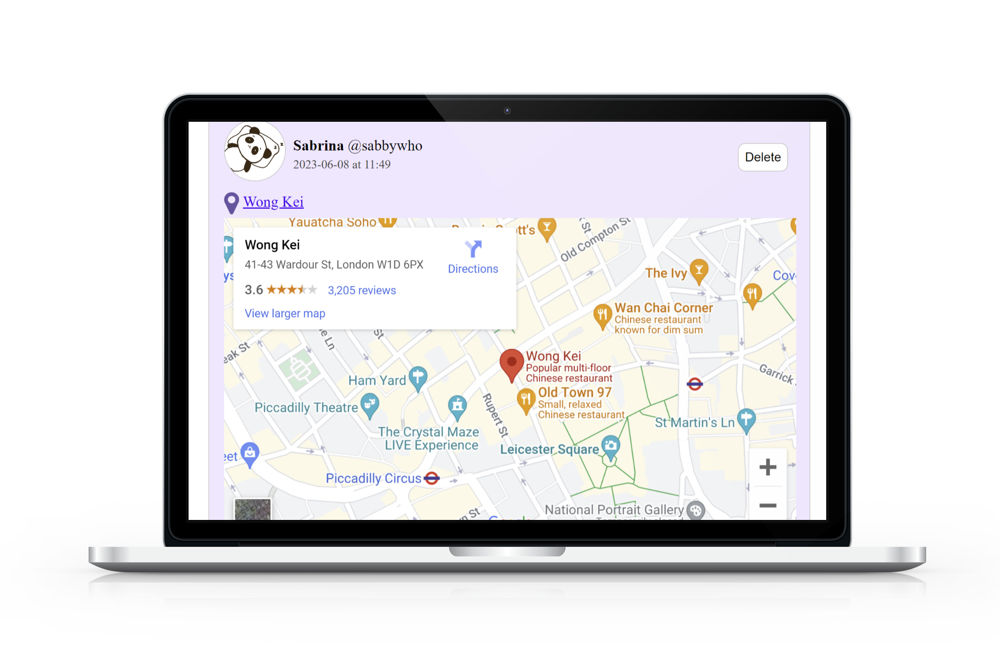
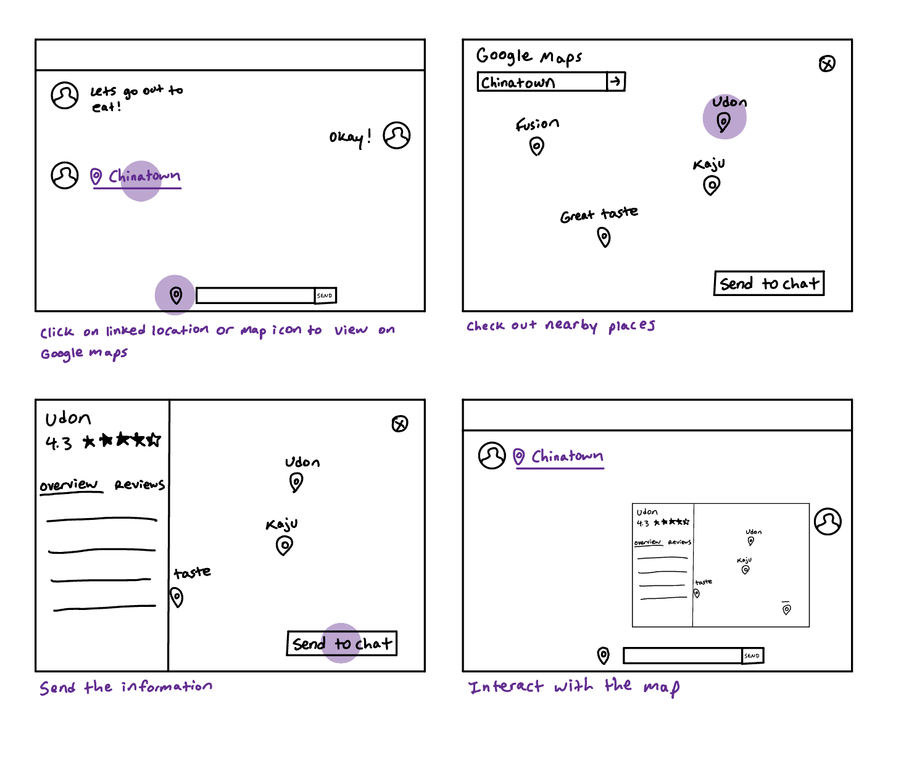

Chat To Go
Chat application with embedded maps and autocomplete to make finding and sending locations easier.
Project Overview
Chat To Go is a chat application I built as my final project for my Design for the Web class. Our objective was to create a unique and novel feature. My project centers around finding and sharing locations with built-in maps. This app makes planning and coordinating meetings more convenient by allowing participants to view the location and nearby points of interests. It can also show alternate meeting places based on geographic considerations. Users can find nearby restaurants, stores, or services relevant to their conversations for easier decision making and recommendations.
Problem
From interviews, I discovered that users find it inconvenient to share locations in chat applications. They need to leave the app to search for information about where to go. They want an easier way to find and decide on places.
How might this app make meeting up and sharing locations a more seamless experience?
Unmet Needs
Discover new places through friends.
Relevant information can be accessed within the application itself.
A more efficient and user-friendly process for evaluating options.
Solution: Chat To Go
User Research
I conducted interviews with 3 participants to understand their experiences with messaging apps and how
they make plans to go places.
Interview Questions
- What messaging app do you use the most and why?
- Have you ever wished there was a specific feature your messaging app had?
- Have you ever been frustrated with this app?
- Do you use separate messaging apps for different purposes?
- Tell me how you and your friends make plans to go out.
- Were there any setbacks or things you wish went more smoothly?
- How do you discover new places?
- How do friends affect your decisions to go out?
- Where do you get recommendations from?
Key Quotes
Insights
- People often discover new places through their friends and trust their recommendations.
- Users heavily consider how close a restaurant is when deciding where to eat.
- Users find it annoying to leave the app to check for information about a restaurant.
- Social media can influence where people go to eat.
- Users want an easier way to find and decide on places to eat.
Paper Prototype
User Testing
Three Tasks Given- Find the Maps icon in the chat.
- Successfully complete a search to find a restaurant.
- Send findings to chat.
- Participants found it more intuitive to directly select the Maps icon next to the chat text box and type out the Google search for the restaurant.
- Participants thought the automatic query was a cool feature but did not understand exactly how it worked.
- Participants tried things out even if they weren't sure and knew they were on the right track when they recognized the icons.
- Even if the participants didn't really know how the feature worked, they were all able to successfully complete the tasks without any help.
- Allow for a manual search in Maps with the icon next to the chat text box.
- Have an additional feature that automatically searches for the restaurant in Maps if it's sent in the chat.
- Make the map interactive instead of just a static image.
Digital Prototype
Improvements Made:
- Included more pages for different options.
- Allowed for both a manual Google Maps search and an automatic query.
- Layout is more understandable.
- Allowed for selection of different options and displayed them.
- Included more icons for a better look and feel.
User Testing
Insights from User Testing- It was not intuitive for the participant to find the map icon by clicking on the "Chinatown" message, but they were able to find the map icon next to the chat box.
- Participant was used to Facebook Messenger layout and thought the map icon would send location, so they tried to exit out and go to regular Google Maps.
- The "Send to Chat" button was not immediately obvious to participants because it is not usually seen on Google maps.
- Create a separate input for locations that generates an automatic search in Google Maps when clicked in chat.
- Auto-generate an embedded map when a location was inputted.
- Include a clickable list of recent locations sent in chat for easy access.
Final User Flow
Final Design
Enter a location in the input field to access a dropdown menu of autocomplete suggestions. An icon is positioned next to the location input for easy access to standard searches in Google Maps.
Once you send the location, an interactive embedded map of the chosen spot appears in the chat. Effortlessly scroll, zoom, and explore the surrounding area. This feature is made using Google Maps autocomplete API and the Google Maps Embed API.

The shared location in the chat is a clickable link that transports you to the corresponding place on Google Maps.
A clickable list of recent locations provides a comprehensive view within the chat and offers an additional option to navigate directly to Google Maps.
Chat App Walkthrough
In summary, this chat application integrates Google Maps to facilitate accurate location searches, display interactive maps, and offer seamless navigation. With clickable links, intuitive icons, and a handy list of recent locations, finding places becomes effortless and brings added convenience to the chat experience.
Reflections
With every round of user testing, I was able to identify areas for improvement from the feedback. The testing revealed what was intuitive and what was not. The paper prototyping was a great way to get feedback that debunked my initial assumptions. I think I would have benefitted from more and a greater variety of testers. Additionally, having to actually code the application made me aware of the limitations of my digital prototype. I needed to adapt to create achievable results.